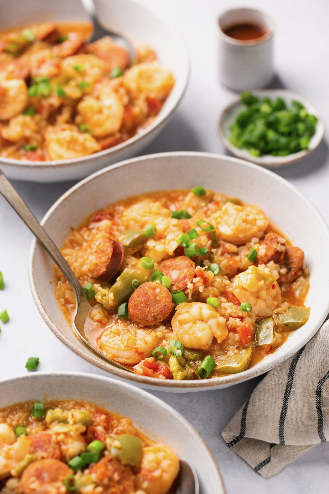

Easy Instant Pot Jambalaya Soup (Not my Recipe)

This hearty Instant Pot Jambalaya recipe is quick, easy, and delicious. Packed with sausage and shrimp, and homemade Creole seasoning, this mouth-watering soup is pressure cooked and ready in just 20 minutes. It even makes amazing leftovers, if you have any!
I am all about soup this time of year. I had this idea to make Instant Pot Jambalaya but when I tested the recipe, it came out super SOUPY. Then I thought…wait a minute…is Jambalaya Soup a thing? Because it should be. We ate the entire thing in 24 hours, and now Instant Pot jambalaya soup is a staple in my house!
This is not my recipe. I am just taking this from this website here: Easy Instant Pot Jambalaya Soup
Ingredients
- 1 tbsp olive oil
- 1 lb shrimp, thawed if previously frozen
- 1 12 oz package smoked sausage, sliced into 1/4-1/2 inch pieces. (can sub kielbasa – look for sugar free if doing Whole30)
- 1 14.5 oz can diced tomatoes
- 1 green bell pepper, seeded and diced
- 1 medium onion, diced
- 2 cloves garlic, minced
- 1 16 oz package frozen cauliflower rice
- 1 cup chicken or beef broth
- 1/2 tsp garlic powder
- 1/2 tsp paprika
- 1 tsp sea salt
- 1/4 tsp black pepper
- 1/4 tsp cayenne pepper, add more for more heat!
- 1 tsp oregano
- 1/2 tsp dried thyme
- 1/2 tsp onion powder
- 1/2 tsp red pepper flakes, reduce for less heat
- Diced scallions/green onions, for garnish
- 1 tbsp arrowroot powder
- 2 tbsp water
Instructions:
- Turn Instant Pot to "saute" mode. Heat olive oil for 1 minute. Add in onions, peppers, and garlic and stir for 2-3 minutes until fragrant and beginning to soften.
- Add in sliced sausage, diced tomatoes, broth, and spices. Lock lid and cook on manual high pressure for 10 minutes.
- Mix arrowroot powder + water to create a slurry. This will help to thicken the soup a bit.
- Manually release the pressure. Hit "cancel/keep warm", then turn to "saute" mode. Bring to a boil, then add in the frozen cauliflower rice and thawed shrimp. Cook for 5-7 minutes until the shrimp is pink and cooked through and the cauliflower rice is tender. Add in slurry and stir to thicken. Serve topped with hot sauce and green onions. Enjoy!